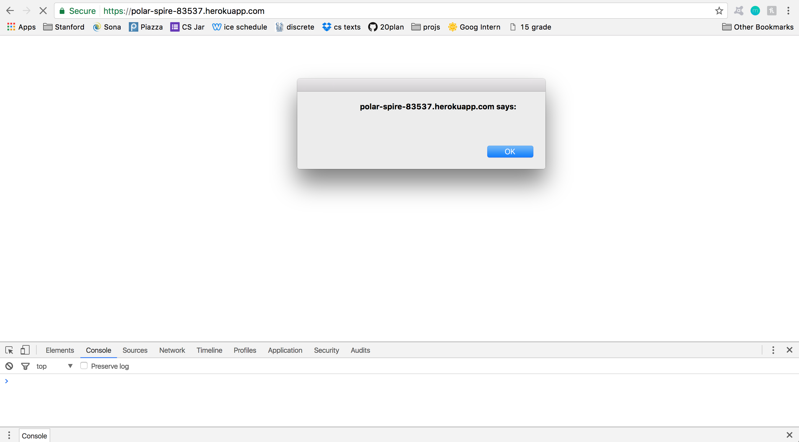
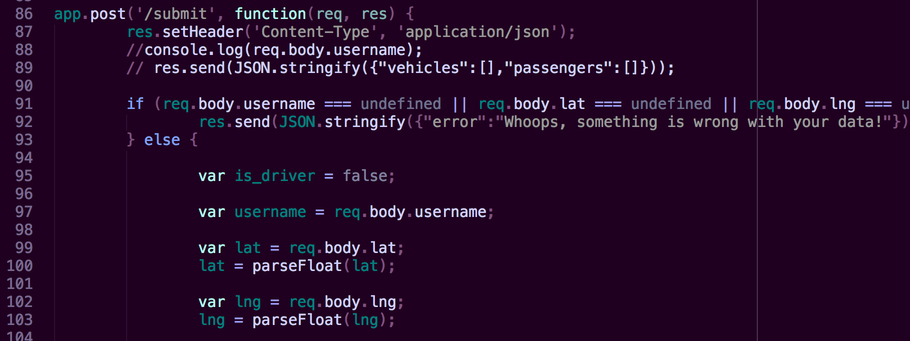
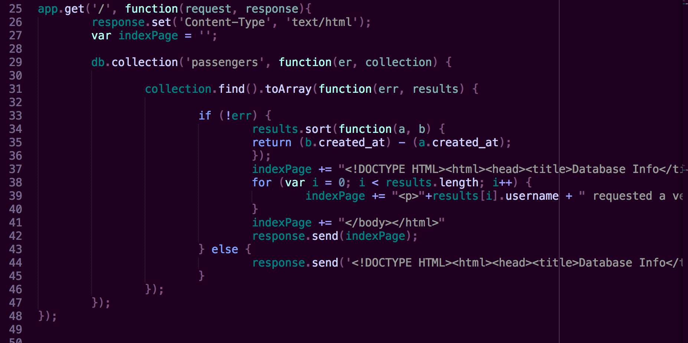

This web application allows passengers and drivers to find drivers or passengers, respectively, in their area. If a passenger logs on, their location is saved in a mongoDB collection, and they can see the location of recently active drivers in their area that were also stored in a mongoDB collection. If a driver logs on, their location is saved in a database, and they can see the locations of recetly active passengers in their area. Because this application stores sensitive information about its clients, I have been hired to find security vulnerabilities with the application. Below I have documented some of the vulnerabilities I found and have suggested ways to remedy the vulnerabilities so that this app can be safer for its users.
vulnerability at https://polar-spire-83537.herokuapp.com/submit, effects at https://polar-spire-83537.herokuapp.com/
High -- XSS is a high severity vulnerability because it allows hackers to completely manipulate your webpage into whatever they want through HTML, CSS, and JavaScript.
I found this vulnerability through the POST '/submit' method and the GET '/' method. The POST method allows one to add documents to the mongoDB without filtering the username content. The GET method then accesses the username content and puts it into HTML format so that it can be added to the webpage's file. This allows for usernames containing JavaScript to be executed when https://polar-spire-83537.herokuapp.com/ is loaded. I found this just by playing around with curl and the POST '/submit' method.
inserting JavaScript into database
JavaScript that was stored in the database being executed
This vulnerability can be resolved by stripping the caret, semi-colon and slash characters out of the username before its stored in the database (line 97) or before the username is added to the HTML dom (line 39).
Where the username is not groomed
Where the database information is put into the HTML DOM
